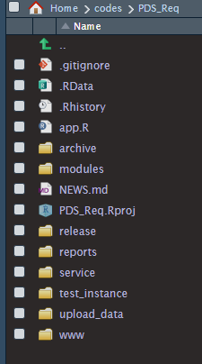
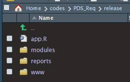
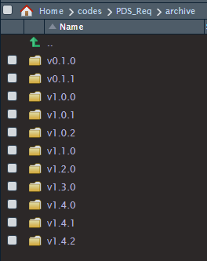
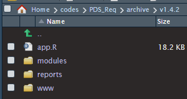

##
## Users directed here when PDS_Request or a database are under service
##
library(shiny)
library(shinyWidgets)
server <- function(input, output, session) {
}
ui <- fluidPage(
navbarPage('PDS',
tabPanel('Under Service',
br(),
fluidRow(
column(6, offset = 3,
panel(status = 'danger', heading = 'UPGRADE',
h3('PDS_Request application is being upgraded (4/15/2019)', style = 'text-align: center;'),
h3('Upgrade Should be completed by 14:45 pm', style = 'text-align: center;'),
br(),
h4('To continue to use through upgrade please connect through:', style = 'text-align: center;'),
div(h3(tags$a(href = '<link to previous version>', 'this link'), style = 'text-align: center;'))
)
)
)
)
)
)
shinyApp(ui, server)I work with a single server and hence cannot set up a dev, test, prod environment. We also cannot use CI/CD and so I’ve developed a particular way of working under these constraints.
All code is stored under a codes folder, residing under the home folder. The folder structure of the app is shown below and subfolders are explained below the image.

working directory contains all the current, development versions of app related files (eg app.R).
modules contains all the shiny modules for the application. All work is partitioned into shiny modules for reusability and debugging. I find that, when working with a tabbed application, placing the ui and server logic for each tab in a module makes for easy development (tabs can be easily added, removed or changed).
release is a subfolder containing the latest stable release (see below).
archive is a subfolder containing the historical release versions (see below).
reports contains any rmarkdown reports.
service is a folder containing an app which displays a service message. This is used in cases when the app is not functioning or an upgrade is in progress (see below).
Active Development
All work is performed in the active folder, using git to track changes. Once a version has been completed and tested it is copied to the release folder replacing the current contents. An additional copy is placed in a version subfolder under archive.



In this case, the active folder contains a dev version, release contains the current prod version and archive contains all historical prod versions.
Linking
I run a shiny server pro instance with other users and store apps in a ~/ShinyApps subfolder under home. Each app has its own subfolder and, rather than copy a working version of the app into the subfolder I use a symbolic link to point to the app instance under my codes folder. The prod version points to the release folder, containing the latest release of the app and the dev version points to the app’s active folder. This allows code development and testing on the dev version as other users access the prod version.
Updates and Downtime
When an update needs to be made, or if there’s an issue with the app and a hotfix needs to be applied it can be useful to have a service page informing users of the app’s status. I use a service subfolder containing a shiny app that generates a static webpage to let users know of potential issues. In addition to informing, it can also point to another subfolder under ~/ShinyApps containing a symbolic link to an archived version. This allows users to continue to use the previous version of the app as changes are made. In order to use a service page, the link in the ShinyApps prod subfolder is simply changed from pointing to the release folder to point to the service folder (both contain an app.R file). An example of a service app is shown below.